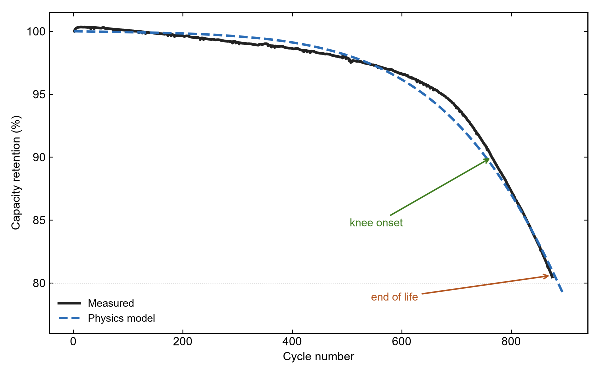
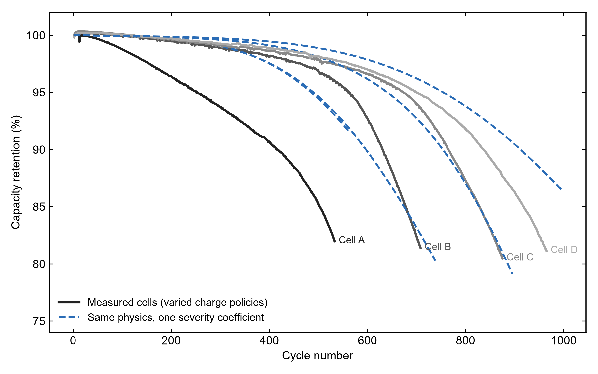
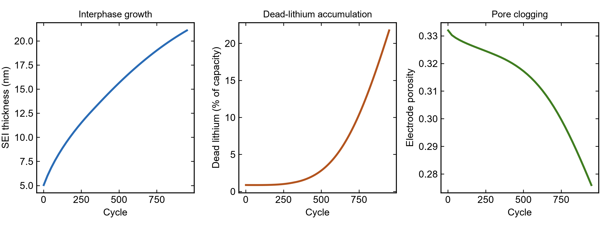

Beyond building electrodes, BEARS predicts how a cell ages. A physics-based degradation digital twin is calibrated against real cycling data to forecast capacity fade, remaining useful life, and the “knee” — the sudden onset of accelerated aging that ends a battery’s life.
Most life-prediction tools are purely statistical: they fit a curve and extrapolate. BEARS couples a physics-based cell model with data. Capacity fade emerges from real degradation mechanisms — solid-electrolyte-interphase (SEI) growth, lithium plating, loss of active material, and particle-level stress — so the forecast carries a mechanistic explanation, not just a trend line. The model is then calibrated against measured cycling data from commercial cells, and used to project health forward.
Capacity loss is resolved into its physical drivers — SEI growth, lithium plating and its partial recovery, dead-lithium accumulation, loss of active material, and porosity change — each tracked cycle by cycle.
The digital twin is tuned to public fast-charge cycling datasets of commercial LFP/graphite cells, matching the measured capacity-retention curve across hundreds of cycles.
The engine reproduces the characteristic flat-then-accelerating fade and locates the knee point, the practical signal for when a pack should be retired.
Nominally identical cells age at different rates. A single mechanistic knob spans the observed cell-to-cell lifetime band, giving realistic best/worst-case envelopes.
One calibrated model form transfers across cells and fast-charge policies with minimal retuning, rather than refitting a new black box for every condition.
Beyond capacity, the model exposes the hidden state — SEI thickness, dead-lithium, porosity, active-material loss — explaining why a given cell is fading.
Capacity-vs-cycle from real cells under a fast-charge protocol
Cell model with SEI, plating, material-loss and stress sub-models
Mechanism strengths tuned to reproduce the measured fade
RUL, knee onset, and internal-state trajectories projected forward
The figures below are generated from the BEARS prognostics workspace: a physics-based digital twin calibrated against a public fast-charge cycling dataset of commercial LFP/graphite cells.



Grounded: the fade magnitude, knee onset, cell-to-cell band, and mechanism trajectories are calibrated to real measured data with a mechanistic model, not an unconstrained curve fit.
Limits (stated openly): the very sharpest terminal knees are steeper than a homogenized cell model naturally produces; and early-cycle life is fundamentally hard to predict — a physics-consistent limit, not a bug. These are reported rather than hidden.